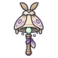

แมลงปอจ่าฝูง
มอนธาตุลม Lv 28–34
เจอที่
| แมพ | โซน | Lv | ภูมิภาค |
|---|---|---|---|
| น้ำตกหิ่งห้อย | 28–34 | ป่ากองไฟ | |
| น้ำตกหิ่งห้อย | แอ่งน้ำตก | 33–34 | ป่ากองไฟ |
| น้ำตกขั้นบันได | 28–34 | ป่ากองไฟ | |
| น้ำตกขั้นบันได | ขั้นบันไดน้ำตก | 33–34 | ป่ากองไฟ |
| ถ้ำหลังม่านน้ำ | 28–34 | ป่ากองไฟ | |
| ถ้ำหลังม่านน้ำ | ม่านน้ำตกใหญ่ | 33–34 | ป่ากองไฟ |
| ยอดน้ำตกหมอกลอย | 28–34 | ป่ากองไฟ | |
| ยอดน้ำตกหมอกลอย | กองหินบนขอบผา | 33–34 | ป่ากองไฟ |
ค่าสถานะตามเลเวล
| Lv | HP | ATK | DEF | MDEF | EXP | Job |
|---|---|---|---|---|---|---|
| 28 | 3,637 | 53–79 | 12 | 6 | 54 | 41 |
| 31 | 4,519 | 60–90 | 14 | 7 | 59 | 44 |
| 34 | 5,746 | 69–103 | 15 | 7 | 64 | 48 |
ตีด้วยธาตุไหนดี
แรงขึ้น: ดิน ×1.5 พิษ ×1.25
เบาลง: น้ำ ×0.5 ลม ×0.25
วัตถุดิบที่ดรอป
| ของ | โอกาส | |
|---|---|---|
| ปีกแมลงปอปลายทอง | 55% | 1 ชิ้น (15% ได้ 2) |
อุปกรณ์ที่ดรอป (4)
| ของ | โอกาส |
|---|---|
| 0.25% | |
| 0.08% | |
 กระดิ่งวิญญาณผีเสื้อราตรี | 0.06% |
| 0.06% |
สกิล
หลบ (Lv 25+) · หลบ (Lv 60+) · วาร์ป (Lv 60+)